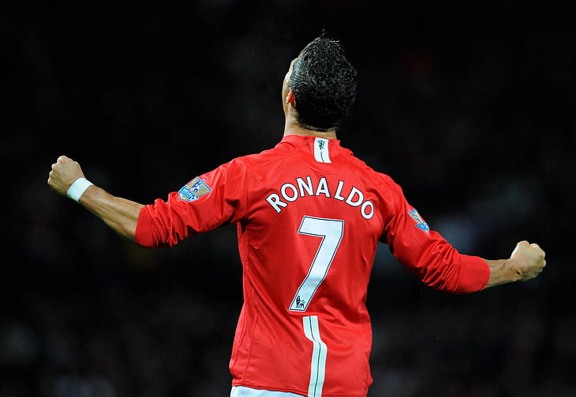

Quien es Cristiano Ronaldo?

Cristiano Ronaldo es un futbolista portugués ampliamente reconocido como uno de los mejores jugadores de la historia. Nació el 5 de febrero de 1985 en Funchal, Madeira. A lo largo de su carrera, ha jugado para clubes como el Manchester United, el Real Madrid y la Juventus, cosechando numerosos títulos y premios.
Con su habilidad excepcional, velocidad y capacidad goleadora, Ronaldo ha dejado una marca indeleble en el mundo del fútbol. Ha ganado múltiples Balones de Oro y ha liderado a Portugal hacia el éxito en torneos internacionales.
Trofeos y reconocimientos
Con el Manchester United (2003-2009):
-3 títulos de la Premier League (2006/07, 2007/08, 2008/09).
-1 Liga de Campeones de la UEFA (2007/08).
-1 FA Cup (2003/04).
-2 Copas de la Liga (2005/06, 2008/09).

Con el Real Madrid (2009-2018):
-2 títulos de La Liga (2011/12, 2016/17).
-4 Ligas de Campeones de la UEFA (2013/14, 2015/16, 2016/17, 2017/18).
-2 Copas del Rey (2010/11, 2013/14).
-2 Supercopas de la UEFA (2014, 2017).
-2 Copas del Mundo de Clubes de la FIFA (2014, 2017).

Con la Juventus (2018-2021):
-2 Serie A (2018/19, 2019/20).

Con el Al Nassr(Actualmente):
-1 Arab Club Champions Cup
Con la selección de Portugal:
-Eurocopa 2016.
-Liga de Naciones de la UEFA 2018/19.